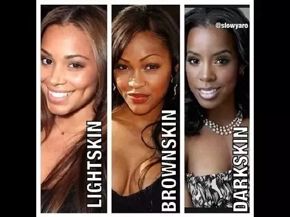

Willie Lynch
William Willie Lynch was a slave owner in the British West Indies who identified himself as the master of a modest plantation. because of how strict he was.
William Willie Lynch was a slave owner in the British West Indies who identified himself as the master of a modest plantation. because of how strict he was.
Willie was called to Virginia to teach other slave owners his methods and tactics due to slave riots such as the New York Slave Revolt.
"Greetings Gentlemen.
I greet you here on the bank of the James River in the year of our Lord one thousand seven hundred and twelve. First, I shall thank you, the gentlemen of the Colony of Virginia, for bringing me here. I am here to help you solve some of your problems with slaves. Your invitation reached me on my modest plantation in the West Indies, where I have experimented with some of the newest and still the oldest methods for control of slaves. Ancient Rome would envy us if my program was implemented. As our boat sailed south on the James River, named for our illustrious King, whose version of the Bible we Cherish, I saw enough to know that your problem is not unique. While Rome used cords of wood as crosses for standing human bodies along its highways in great numbers, you are here using the tree and the rope on occasion. I caught the whiff of a dead slave hanging from a tree, a couple miles back. You are not only losing valuable stock by hangings, you are having uprisings, slaves are running away, and your crops are sometimes left in the fields too long for maximum profit. You suffer occasional fires, your animals are killed. Gentlemen, you know what your problems are; I do not need to elaborate. I am not here to enumerate your problems, I am here to introduce you to a method of solving them. In my bag here, I have a foolproof method for controlling your black slaves. I guarantee every one of you that if installed correctly It will control the slaves for at least 300 hundred years. My method is simple. Any member of your family or your overseer can use it. I have outlined a number of differences among the slaves, and I take these differences and make them bigger. I use fear, distrust and envy for control purposes. These methods have worked on my modest plantation in the West Indies and it will work throughout the South. Take this simple little list of differences and think about them. On top of my list is "AGE" but it's there only because it starts with an "A." The second is "COLOR" or shade, there is Intelligence, size, sex, sizes of plantations, status on plantations, Attitude of owners, whether the slaves live in the valley, on a hill, East, West, North, South, have fine hair, course hair, or is tall or short. Now that you have a list of differences, I shall give you a outline of action, but before that, I shall assure you that Distrust is stronger than trust and envy stronger than adulation, respect or admiration. The Black slaves after receiving this indoctrination shall carry on and will become self refueling and self-generating for Hundreds of years, maybe Thousands. Don't forget you must pitch the OLD black Male vs. the Young black Male, and the Young black Male against the OLD black male. You must use the Dark skin slaves vs. the LIGHT skin slaves, and the Light skin slaves vs. the Dark skin slaves. You must use the Female vs. the Male. And the Male vs. the Female. You must also have your white servants and overseers distrust all Blacks. But it is necessary that your slaves trust and depend on us. They must love, respect and trust only us. Gentlemen, these kits are your keys to control. Use them. Have your wives and children use them, never miss an opportunity. If used intensely for one year, the slaves themselves will remain perpetually distrustful.Thank you gentlemen."
The memorable Light Skin vs. Dark Skin debate on Twitter began. This debate is an example of how Willie Lynchs teachings still affect people.
